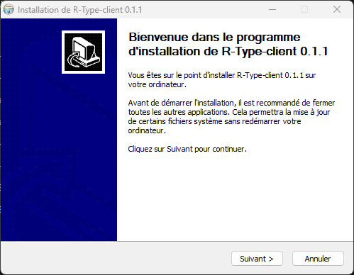

R-type is a multiplayer 2D shoot'em up game. The game is separated in two part: the client that display the game to the user, and the server who handle connections and running the game.
This repository contains the game R-type, the server program for R-Type, the Game Engine and a sample platformer game.
Exchange protocol
The R-Type client and server respect a protocol detailed here
For any creation of new clients or server programs, the protocol must be respected otherwise it will not be compatible.
Game engine
The R-Type Game Engine is the game engine used to build the R-Type client and server program. It is composed of a static library and headers files. You can use the game engine to create a variety of games.
To use the game engine, refer to this documentation or the reference.
Downloading
There is two ways to get each part of the game:
Get the release
Go to the latest release, you can download the archieve or an installer for each part of R-Type (client, server, game engine or sample game) depending on your platform.
On Linux
Archive
Extract the archive, you will find the program in the main folder.
Script
First you'll need to add execution permission to the installation script (ending in .sh) this way:
The you can execute the script like this:
You'll find a new folder with the part your wanted inside, the program will directly be inside.
On Windows
Archive
Extract the archive, you will find the program in the main folder.
Installer
Launch the installer and follow the instructions. 
Later select the components (bin is mandatory) 
Build from source
On Linux
Requirements:
- freetype
- x11
- xrandr
- udev
- opengl
- flac
- ogg
- vorbis
- vorbisenc
- vorbisfile
- openal
- pthread
- cmake
- a make program
- a C++ compiler
You should have this installed beforehand.
To build from source, you'll have to download the source code from either a release or in the Code menu on the repository Github page.
Then you'll have to go the folder and execute the build.sh script like this:
This command without specifying the part to build will build all the parts of R-Type (the game engine, the client, the server, the sample game and the unit tests), the parts to precise are the following:
- Client
- Server
- GameEngine
- Platformer (for the sample game)
- tests
You can build all of the part at once by specifiying no part. Additionally, you can build in debug mode by specifiying -d after ./build.sh
You'll then have the corresponding binary/library in the R-Type folder for the client, the R-Type-server folder for the server, the Platformer folder for the sample platformer game, the GameEngine/GameEngine/lib folder for the game engine and tests folder for the unit tests.
On Windows
Requiremants:
- cmake
- a C++ compiler
You should have this installed beforehand.
To build from source, you'll have to download the source code from either a release or in the Code menu on the repository Github page.
Then you'll have to go the folder and execute the build.bat script by double-clicking on it.
You can also run the build.bat script through the Windows cmd like this:
Simply double-clicking on the script or running the command without specifying the part to build will build all the parts of R-Type (the game engine, the client, the server, the sample game and the unit tests), the parts to precise are the following:
- Client
- Server
- GameEngine
- Platformer (for the sample game)
- tests
You can build all of the part at once by specifiying no part. Additionally, you can build in debug mode by specifiying -d after build.bat
You'll then have the corresponding binary/library in the R-Type folder for the client, the R-Type-server folder for the server, the Platformer folder for the sample platformer game, the GameEngine\GameEngine\lib folder for the game engine and tests folder for the unit tests.
Usage
Important: Always run the executable alongside the .dll files on windows. For Linux, you should may have to edit the LD_LIBRARY_PATH environment variable with the emplacement of the .so files or as is if you're building from source.
Linux
Server
Client
You should always run from a folder containing the R-Type/assets, R-Type/fonts and config folders (with the required files inside).
Platformer
You should always run from a folder containing the Platformer/assets, Platformer/maps and Platformer/config folders (with the required files inside).
Windows
Server
You can also double clicking on the executable, however you'll only use the default parameters this way.
Client
You should always run from a folder containing the R-Type\assets, R-Type\fonts and config folders (with the required files inside).
You can also double clicking on the executable, however you'll only use the default parameters this way.
Platformer
You should always run from a folder containing the Platformer\assets, Platformer\maps and Platformer\config folders (with the required files inside).
You can also double clicking on the executable, however you'll only use the default parameters this way.
Credits
R-Type music by Aldric Jourdain and Damien Pham (SNO!). SCP-Adventure music by Aldric Jourdain (originally from Shadowy Light).